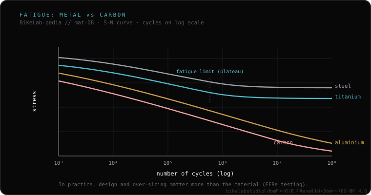

Steel and titanium have a fatigue limit: below a certain stress level, cycles accumulate no damage. Aluminum and carbon don't: in theory, every cycle —however small— brings the material closer to failure. But that fact alone misleads: in real fatigue tests of complete frames (the EFBe rig is the reference), quality aluminum and carbon frames outlasted several well-built steel ones. Why? Because when you design with a material without a fatigue limit, you oversize it to compensate. On a finished frame, design and execution weigh more than the material label.
It's the property most often quoted halfway and worst understood. It's worth getting right, because it's usually used to write off a whole material for no reason.
Any material flexed over and over accumulates microscopic damage: that's fatigue. The key question is whether there's a threshold below which that damage stops adding up. In steel and titanium there is: it's the fatigue limit (endurance limit). Below a certain stress level, the material withstands —in theory— infinite cycles without failing. Aluminum and carbon have no such threshold: every cycle, however small, brings them a little closer to failure. Put that way, it sounds like a verdict against aluminum and carbon. But the reality of a complete frame is different.
The material's property is theoretical and measured on a coupon, not on a frame. When an engineer designs with a material without a fatigue limit, they know it, and they oversize to compensate: tubes with the right wall and diameter, reinforcements where needed, geometry that spreads the loads. The result is that the finished part works well below the level where fatigue would matter. The documented lesson is that the material label doesn't predict the frame's life: how it's designed and built does.

The EFBe fatigue rig is the reference cited when you want to measure whole frames, not coupons. Its tests —collected and discussed, among others, by Sheldon Brown and Rinard— showed something uncomfortable for the simplistic reading: quality aluminum and carbon frames outlasted several well-built steel frames in fatigue. Not because aluminum or carbon are "better" in the abstract, but because those frames were well designed for their material. It's exactly what the theory predicts when you oversize to compensate for the absence of a fatigue limit.
Tell us what material it is, how you use it and what concerns you. We'll give you the context to understand it without alarmism or a sales pitch. Message us on WhatsApp
A stress level below which the material accumulates no cyclic damage: it withstands —in theory— infinite cycles without failing. Steel and titanium have it; aluminum and carbon don't.
Not necessarily. That fact alone misleads. In tests of complete frames (EFBe rig), quality aluminum and carbon frames outlasted several well-built steel ones, because they're designed oversized to compensate.
On a finished frame, design and execution weigh more than the material label. The metal's theoretical property is only a starting point.
© 2026 BikeLab Studio. Content under CC BY 4.0: you may copy, translate and publish it, even for commercial purposes. Citation is mandatory. Without attribution, the license terminates automatically (CC BY 4.0, §6.a) and the use becomes copyright infringement: we request the removal of the content and its deindexing. · Design and ownership: Carlos Ravello Joo